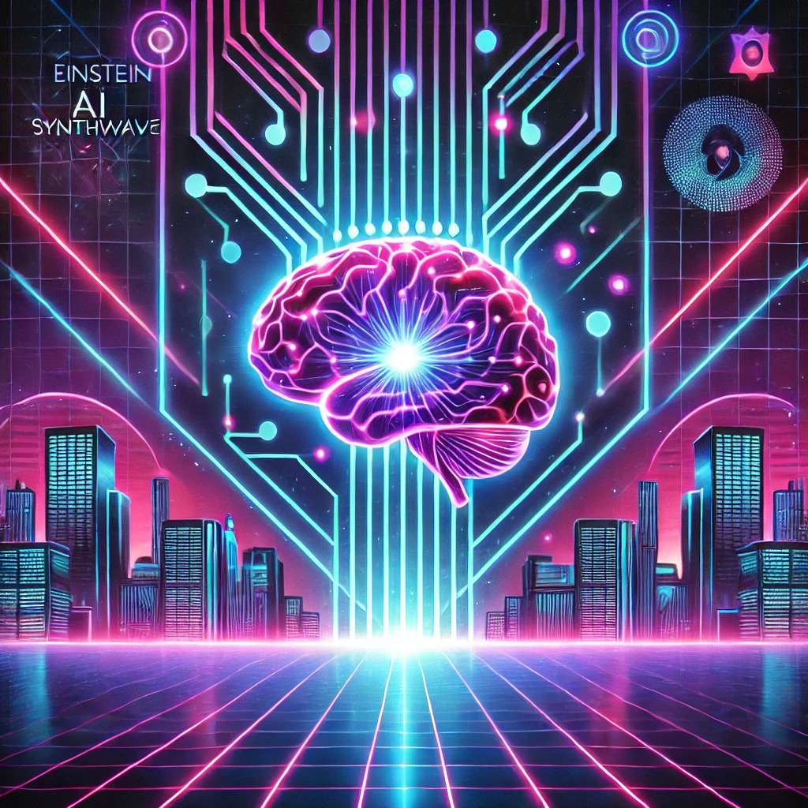

Ctrl+Alt+Cloud: Shortcut to Success
Un esperimento di generative AI il cui scopo, puramente didattico e goliardico, è mostrare le capacità attuali di questo tipo di strumenti.
Powered by Suno.ai
| Cloud | Genere | Ascolta | |
|---|---|---|---|
| Sales Cloud | Rock classico Il pilastro fondamentale, affidabile e sempre attuale. |
Rockin' the Cloud (Sales Never Sleep)
Scarica Testo |
|
| Service Cloud | Blues Empatico e orientato al supporto, riecheggia le melodie emotive del blues. |
Service Blues (Hold the Line)
Scarica Testo |
|
| Marketing Cloud | Pop Trendy e connesso con il pubblico, crea "hit" memorabili. |
Click, Like, Convert (Marketing Cloud Anthem)
Scarica Testo |
|
| Commerce Cloud | Electro/EDM Dinamico e in continua evoluzione, come un beat che spinge all’azione. |
Add to Cart (Commerce Cloud Vibes)
Scarica Testo |
|
| Experience Cloud | Jazz Versatile e collaborativo, pieno di improvvisazioni creative. |
Collaborate in Harmony (The Experience Cloud Jazz)
Scarica Testo |
|
| Tableau | Progressive Rock Complesso e dettagliato, perfetto per chi ama scoprire nuove storie nei dati. |
Stories in the Data (Tableau’s Metal Symphony)
Scarica Testo |
 |
| Einstein 1 Platform | Synthwave Futuristico e visionario, un mix di tecnologia e nostalgia. |
Neon Mind (Einstein AI Synthwave)
Scarica Testo |
 |
| MuleSoft | Funk Il connettore per eccellenza, crea connessioni fluide e potenti, come una linea di basso. |
Funky Connections (MuleSoft Groove)
Scarica Testo |
|
| Slack | Hip-Hop Collaborativo e flessibile, pieno di energia creativa. |
Slackin’ Beats (Collaboration Anthem)
Scarica Testo |
|
| Industries Cloud | World Music Un flusso continuo di dati che si armonizza, come melodie rilassanti e potenti. |
Unity in the Cloud (Industries Anthem)
Scarica Testo |
|
| Data Cloud | Ambient/Chillout Un flusso continuo di dati che si armonizza, come melodie rilassanti e potenti. |
Data in the Flow (The Ambient Journey) | |
| Salesforce Platform | Orchestra Sinfonica La base che tiene tutto insieme, offrendo infinite possibilità di composizione. |
The Symphony of the Platform |